E2A showcase packs: review gallery
What this asks you to approve: the photo per machine, the storyboard of each guide (what every panel shows and which manual page it comes from) and the source and rights register. Final artwork is drawn only after approval.
EXCAVATOR-017: Bobcat E20
Blockers
- OMM 7255004 not yet in hand (the operator is buying it): specifications, start-up, controls, attachments and transport points; panels 3, 4, 7 and 8.
- Knowledgeable review of the drawn panels and page text by the named reviewer (the operator).
Photo
e20-a (proposed)
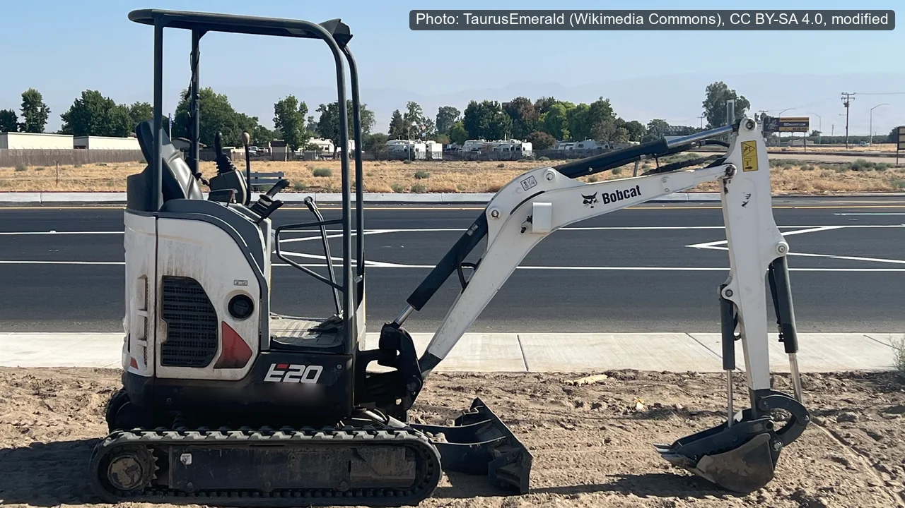
TaurusEmerald, CC BY-SA 4.0, modified. Source

- Removed the rental company's phone number on the lower body panel.
- Removed the rental company's name and 'Rents' sticker below the E20 model decal (the E20 decal is kept).
- Removed the rental fleet number label on the canopy roof.
- Cropped to 16:9 (left 0, top 326, 3658x2058) and resized to 1280x720.
- Added the credit label "Photo: TaurusEmerald (Wikimedia Commons), CC BY-SA 4.0, modified" in the top-right corner.
- e20-fullframe-a.jpg: the same edits on the full frame, resized to 1280x940, no label (getmulemark.com placement scenes (candidate)).
- Dropped the original's camera and location metadata.
e20-hero-a.webp: 173670 bytes · e20-hero-a.jpg: 183852 bytes
Configuration
| generation | E20 with serial prefix B3BL (the model Bobcat sold until the new E20 of November 2025) |
|---|---|
| operator protection | canopy (matches photo candidate A) |
| tracks | rubber |
| arm | not established (OMM; candidate B shows the long arm) |
| control pattern | not established (OMM) |
| auxiliary hydraulics | not established (OMM) |
| blade | fitted |
Manual and supplements
- E20 Compact Excavator Operation & Maintenance Manual (7255004 ENUS; for serial B3BL11001 and above per Bobcat's listing (confirmed on receipt)) · to-purchase · private-only
- Rent It Safely: Safety Rules for Bobcat Compact Excavators (B-1699) (04/25) · in-hand · link-only
- Service Schedule: E19, E20 Compact Excavator (SS EXC E19 E20-0315) (0315) · in-hand · link-only
Start-Up Guide
REVIEW_REQUIRED Bobcat E20 Start-Up Guide (PDF, 2 pages, 190 KB). Carries the review-draft banner until every panel is approved.
Panels (8)
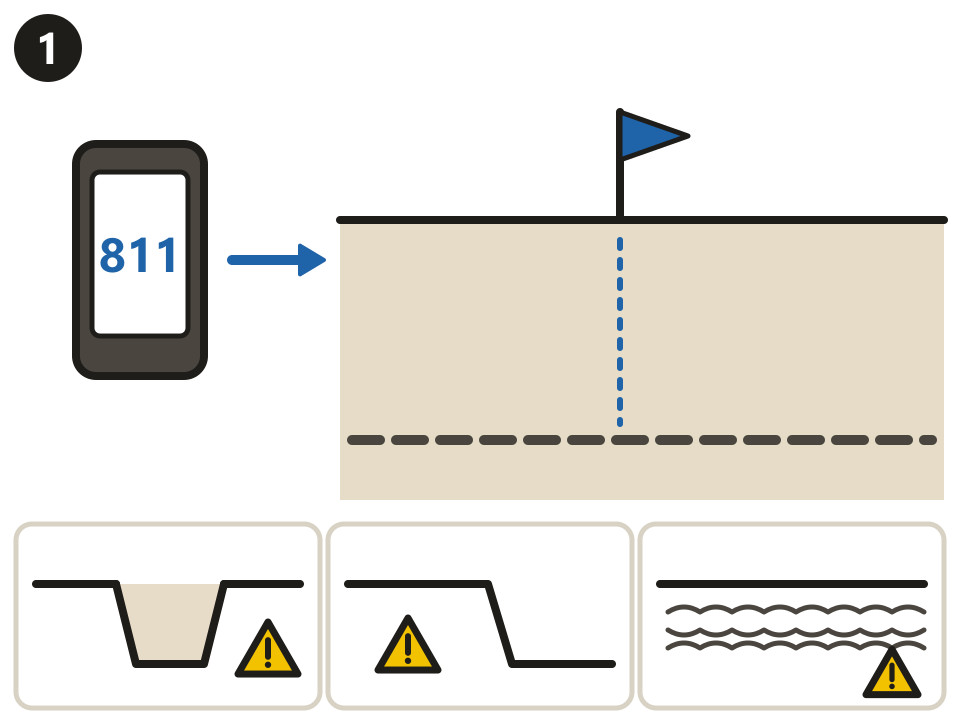
1. Call before you dig REVIEW_REQUIRED
Call 811 before you dig. Watch for holes, drop-offs and soft ground.
Task: Locate underground utilities and check the ground before digging.
Shown: No machine controls drawn.
Warnings: Know where underground lines run (PDF p. 2).
Source: Rent It Safely: Safety Rules for Bobcat Compact Excavators (B-1699), PDF p. 2, "Knowing the Worksite"
Artwork drawn from the approved storyboard; awaiting the reviewer.
- 811 matches Bobcat's sheet and the operator's default.
- No utility colour codes are invented.
2. Walk around first REVIEW_REQUIRED
Walk around before you start: leaks, broken or damaged parts. Report anything.
Task: Look for leaks and broken or damaged parts before starting.
Shown: Original line drawing of a canopy compact excavator in E20 proportions, not traced from any photo or OEM figure; no controls.
Source: Rent It Safely: Safety Rules for Bobcat Compact Excavators (B-1699), PDF p. 1, "Before Operating"; Service Schedule: E19, E20 Compact Excavator (SS EXC E19 E20-0315), PDF p. 1; pol-renter-walkaround
Artwork drawn from the approved storyboard; awaiting the reviewer.
- The silhouette reads as a canopy compact excavator.
- The walk-around matches the Northridge policy (renter: leaks and damage).
3. Belt on, controls neutral BLOCKED
Belt on. Levers and controls in neutral. Start only from the seat.
Task: Seat belt fastened; start only from the seat with the levers and controls in neutral.
Shown: Needs the E20's real control layout from the OMM: lever positions, the console and the key switch. Nothing is drawn until then.
Warnings: Never operate controls from the ground (PDF p. 2).
Source: Rent It Safely: Safety Rules for Bobcat Compact Excavators (B-1699), PDF p. 1; PDF p. 2, "While Operating"; E20 Compact Excavator Operation & Maintenance Manual, Operator station (to be located)
Control depiction needs OMM 7255004.
- Controls are drawn from the OMM's figures, not mirrored or stylized.
4. Levers away: toward the blade BLOCKED
Levers pushed away = travel toward the blade. Check where the blade is before you move.
Task: Show that pushing the steering levers away drives toward the blade, wherever it is.
Shown: Top views of the undercarriage and blade. The levers' real form and position come from the OMM, so this panel waits for it.
Warnings: Look in the direction of travel before moving (PDF p. 2).
Source: Rent It Safely: Safety Rules for Bobcat Compact Excavators (B-1699), PDF p. 2, "While Operating"; E20 Compact Excavator Operation & Maintenance Manual, Travel controls (to be located)
Control depiction needs OMM 7255004; the rule itself is sourced.
- Direction arrows checked against the OMM's travel figure.
- Any travel pedals are shown only if the OMM shows them for this configuration.
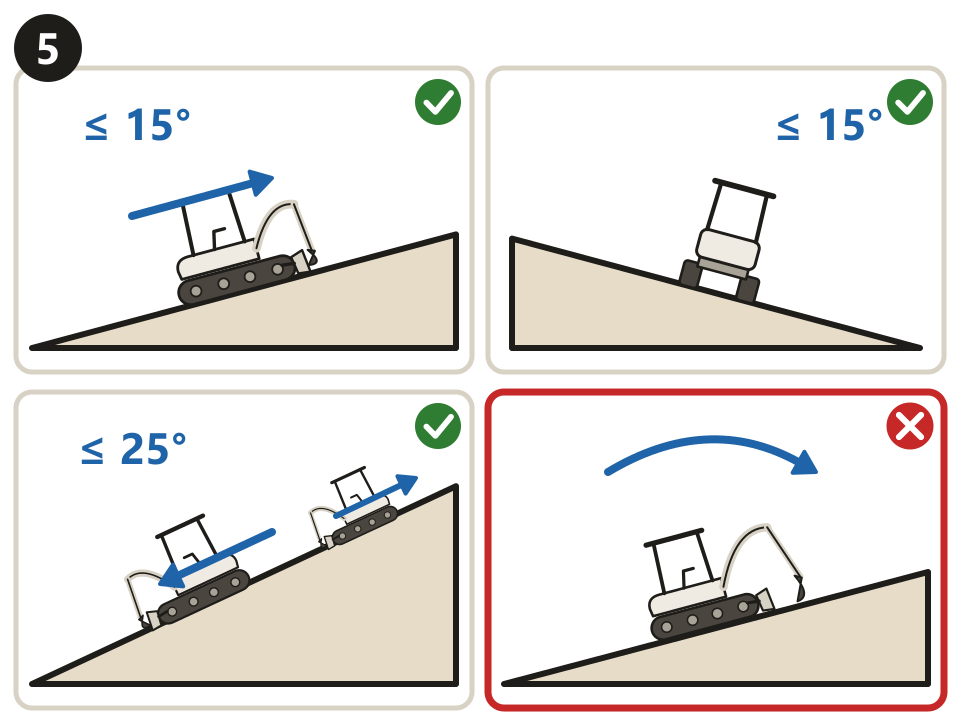
5. Slope limits REVIEW_REQUIRED
Across or up: 15 degrees or less. Down or backing up: 25 degrees or less. No swinging loads on a slope.
Task: Show the slope limits for travel and the rule against swinging on a slope.
Shown: Side and rear silhouettes; no controls.
Warnings: Swing loads low and slowly (PDF p. 2).
Source: Rent It Safely: Safety Rules for Bobcat Compact Excavators (B-1699), PDF p. 2, "While Operating"
Artwork drawn from the approved storyboard; awaiting the reviewer and the cross-check against the E20 OMM.
- Angles match B-1699 exactly.
- Cross-check against the E20 OMM's slope section on receipt.
6. Keep people clear REVIEW_REQUIRED
Keep people out of the swing area. Never lift over anyone. No riders.
Task: Bystanders away; never lift over a person; no riders.
Shown: Top view; no controls.
Warnings: Never carry riders (PDF p. 2).
Source: Rent It Safely: Safety Rules for Bobcat Compact Excavators (B-1699), PDF p. 2, "While Operating"
Artwork drawn from the approved storyboard; awaiting the reviewer and the cross-check against the E20 OMM.
- The zone is labelled generically; no distance is invented.
7. Leaving the machine BLOCKED
1 Bucket on the ground. 2 Shut down. 3 Key out. 4 Console up.
Task: Attachment down, shut down, key out, console up.
Shown: Frames 1-3 use generic icons. Frame 4 needs the E20 console's real form and raise direction from the OMM.
Interlocks: Raising the console is the lockout the service schedule checks daily (PDF p. 1).
Source: Rent It Safely: Safety Rules for Bobcat Compact Excavators (B-1699), PDF p. 2, "Leaving the Machine"; Service Schedule: E19, E20 Compact Excavator (SS EXC E19 E20-0315), PDF p. 1, console lockout
Frame 4 needs OMM 7255004; frames 1-3 are sourced.
- The sequence order matches B-1699.
- The console frame is drawn from the OMM.
8. Loading for transport BLOCKED
Heavy end uphill. Slew lock on. Chain it down at the tie-down points.
Task: Heavy end uphill on the ramp, slew lock on, chained at the tie-down points.
Shown: Side view. Tie-down point and slew-lock positions come from the OMM.
Warnings: Use a tow vehicle and trailer of adequate capacity (PDF p. 1).
Source: Rent It Safely: Safety Rules for Bobcat Compact Excavators (B-1699), PDF p. 1, "Safely Transporting the Machine and Attachment"; E20 Compact Excavator Operation & Maintenance Manual, Transporting (to be located)
Tie-down and slew-lock positions need OMM 7255004.
- Which end is heavy, checked against the OMM.
- The tie-down points match the OMM figure.
Public page text
| Headline READY | Bobcat E20 compact excavator with canopy. Read the Start-Up Guide before you start. Identity facts. |
|---|---|
| Quick start BLOCKED | 1. Before you dig, call 811 and check the area for holes, drop-offs and soft ground. 2. Walk around the machine: look for leaks and broken or damaged parts. 3. Climb on with the grab handles and tracks (never jump off) and fasten the seat belt. 4. Start only from the seat, with the levers and controls in neutral. 5. Pushing the travel levers away drives toward the blade: check where the blade is first. 6. Before you leave the seat: bucket on the ground, engine off, key out, console up. The Start-Up Guide shows each step. Start-up and control steps come from Bobcat's E20 manual (7255004), not in hand yet. Publish after they are added and reviewed. |
| Safety REVIEW_REQUIRED | Keep people out of the swing area, and never lift the boom or bucket over anyone. No riders. Slopes: no more than 15° across or up, or 25° down or backing up. Don't swing loads on a slope. Stay within the lift chart on the machine. Never work the controls from the ground. No smoking while fueling. From Bobcat's rental safety sheet; awaiting the reviewer and the OMM cross-check. |
| Fuel / power BLOCKED | (empty) Fuel type and tank capacity come from the E20 manual. |
| Troubleshooting REVIEW_REQUIRED | Something wrong (a warning light, leak or odd noise): stop, lower the bucket to the ground, shut down and use Request Support. Northridge policy plus Bobcat's leaving-the-machine sequence; awaiting the reviewer. |
| Return REVIEW_REQUIRED | Return the keys and any attachments. Leave it with the bucket on the ground, engine off, key out and console up. Use Return checklist when you drop it off. Accessories from the return checklist template; the parking line from Bobcat's sheet. |
| Emergency READY | For emergencies call your local emergency number. For equipment issues, use the support contact on this page. Mulemark's standard emergency wording (lib/onboarding/templates.ts). |
Documents on the page
- REVIEW_REQUIRED Bobcat E20 Start-Up Guide · startup_guide · hosted
- READY Bobcat E20 Operation & Maintenance Manual (sold by Bobcat) · manual · link
- READY Bobcat Rent It Safely: compact excavator safety rules · safety_sheet · link
Showcase story: Guidance and handoff
A renter scans the tag on site, opens the Start-Up Guide built from Bobcat's documents and acknowledges it. Staff record the outbound condition, a support question is answered by pointing to the guide, and most returns are clean.
What it does not show: It shows the guidance was delivered and acknowledged, not that it was read or understood.
Checklist
Return and outbound template mini_excavator_skid_steer. Accessories: Keys, Attachments, Manual.
Full review copy: docs/phase-e/packs/bobcat.e20.b3bl-canopy/review.md; storyboard: storyboard.md.
EXCAVATOR-3015: Caterpillar 301.5
Blockers
- OMM M0088895 not bought (operator: no for now): every operating step and all 8 panels stay unwritten; the page uses the handover policy and links Cat's manual.
Photo
cat-301-5 (proposed)
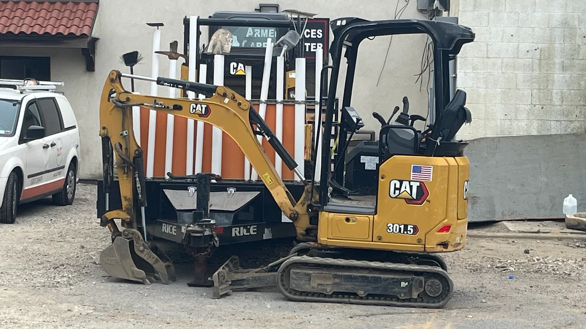
LostplanetKD73, CC0 1.0, modified. Source

- Removed the round political sticker on the boom.
- Removed the dealer decal above the 301.5 model decal (the model decal is kept).
- Cropped to 16:9 (left 0, top 427, 4032x2268) and resized to 1280x720.
- Dropped the original's camera and location metadata.
301-5-hero.webp: 165148 bytes · 301-5-hero.jpg: 180811 bytes
Configuration
| generation | current 301.5 with the Cat C1.1 engine |
|---|---|
| serial prefix | MNH or ZHL (both covered by OMM M0088895-24) |
| operator protection | canopy |
| tracks | rubber |
| stick | standard (showcase configuration; not verifiable from the photo) |
| undercarriage | not established (fixed or expandable) |
Manual and supplements
- Operation and Maintenance Manual M0088895: 301.5 to 302 CR Mini Hydraulic Excavators (full) (M0088895-24 (en-us), June 2026. Cat Publications price seen 2026-10-17: download US$97, CD US$97, printed book US$114) · to-purchase · private-only
- Operation and Maintenance Manual M0088895-24: 301.5, 301.6, 301.7 CR, 301.8, 302 CR (publisher preview) (M0088895-24 (en-us), June 2026) · in-hand · link-only
- 301.5 Mini Excavator (specifications brochure AEHQ8144-08) (AEHQ8144-08) · in-hand · link-only
Start-Up Guide
BLOCKED No guide: no panel can be drawn yet. OMM M0088895 not bought (operator: no for now): every operating step and all 8 panels stay unwritten; the page uses the handover policy and links Cat's manual.
Panels (8)
1. Walk around first BLOCKED
To be written from the OMM's Before Operation section.
Task: Before-operation checks.
Shown: Not drawn until the OMM is in hand.
Source: Operation and Maintenance Manual M0088895: 301.5 to 302 CR Mini Hydraulic Excavators (full), p. 171
Needs OMM M0088895; the operator declined the purchase for now (2026-10-17). The page links Cat's official channel instead.
2. Climb on, belt on BLOCKED
To be written from the OMM's Operator Station section.
Task: Mounting and the operator station.
Shown: Not drawn until the OMM is in hand.
Source: Operation and Maintenance Manual M0088895: 301.5 to 302 CR Mini Hydraulic Excavators (full), p. 51
Needs OMM M0088895; the operator declined the purchase for now (2026-10-17). The page links Cat's official channel instead.
3. Start up BLOCKED
To be written from the OMM's Engine Starting section.
Task: Engine starting.
Shown: Not drawn until the OMM is in hand.
Source: Operation and Maintenance Manual M0088895: 301.5 to 302 CR Mini Hydraulic Excavators (full), p. 236
Needs OMM M0088895; the operator declined the purchase for now (2026-10-17). The page links Cat's official channel instead.
4. Controls and travel BLOCKED
To be written from the OMM's Machine Operation section.
Task: Controls, travel and Stick Steer mode.
Shown: Not drawn until the OMM is in hand.
Source: Operation and Maintenance Manual M0088895: 301.5 to 302 CR Mini Hydraulic Excavators (full), p. 174
Needs OMM M0088895; the operator declined the purchase for now (2026-10-17). The page links Cat's official channel instead.
5. Slopes BLOCKED
To be written from the OMM's Slope Operation section.
Task: Slope operation.
Shown: Not drawn until the OMM is in hand.
Source: Operation and Maintenance Manual M0088895: 301.5 to 302 CR Mini Hydraulic Excavators (full), p. 41
Needs OMM M0088895; the operator declined the purchase for now (2026-10-17). The page links Cat's official channel instead.
6. Parking BLOCKED
To be written from the OMM's Parking section.
Task: Parking and leaving the machine.
Shown: Not drawn until the OMM is in hand.
Source: Operation and Maintenance Manual M0088895: 301.5 to 302 CR Mini Hydraulic Excavators (full), p. 279
Needs OMM M0088895; the operator declined the purchase for now (2026-10-17). The page links Cat's official channel instead.
7. Loading for transport BLOCKED
To be written from the OMM's Transportation Information section.
Task: Loading, tying down and transporting.
Shown: Not drawn until the OMM is in hand.
Source: Operation and Maintenance Manual M0088895: 301.5 to 302 CR Mini Hydraulic Excavators (full), p. 283
Needs OMM M0088895; the operator declined the purchase for now (2026-10-17). The page links Cat's official channel instead.
8. Engine stopped: lower the boom BLOCKED
To be written from the OMM's Equipment Lowering section.
Task: Lowering the equipment with the engine stopped.
Shown: Not drawn until the OMM is in hand.
Source: Operation and Maintenance Manual M0088895: 301.5 to 302 CR Mini Hydraulic Excavators (full), p. 42
Needs OMM M0088895; the operator declined the purchase for now (2026-10-17). The page links Cat's official channel instead.
Public page text
| Headline READY | Cat 301.5 mini excavator with canopy. Northridge walks you through start-up and the controls at handover. Identity facts and Northridge policy. |
|---|---|
| Quick start READY | Before operating, go through start-up and the controls with Northridge staff at handover. Cat's Operation and Maintenance Manual is linked under Manual. Northridge policy; no Cat operating steps are written without the manual. |
| Safety BLOCKED | (empty) Cat's safety rules come from OMM M0088895, not bought (operator decision, 2026-10-17). |
| Fuel / power READY | Fuel tank: 22.0 L (5.8 gal). From Cat's brochure, p. 2. |
| Troubleshooting READY | Something wrong (a warning light, leak or odd noise): stop safely and use Request Support. Northridge policy. |
| Return READY | Return the keys and any attachments. Northridge photographs the machine at handover and at return. Use Return checklist when you drop it off. Return checklist template and Northridge policy. |
| Emergency READY | For emergencies call your local emergency number. For equipment issues, use the support contact on this page. Mulemark's standard emergency wording (lib/onboarding/templates.ts). |
Documents on the page
- READY Cat 301.5 Operation and Maintenance Manual M0088895 (sold by Cat Publications; search M0088895) · manual · link
Showcase story: Condition evidence
Staff take outbound photos at handover, then a return checklist flags new damage with photos and staff review and resolve it. One renter damage report arrives without photos, and the record shows exactly what was and wasn't captured.
What it does not show: It shows when something was recorded, not who caused it.
Checklist
Return and outbound template mini_excavator_skid_steer. Accessories: Keys, Attachments, Manual.
Full review copy: docs/phase-e/packs/cat.301-5.canopy/review.md; storyboard: storyboard.md.
TRAILER-014: Big Tex Trailers 35SA-12
Blockers
- Exact-model photo: no licensed 35SA photo exists; waiting on Big Tex's reply to the operator's permission request (sent 2026-10-17).
- Knowledgeable review of the finished guide and page text by the named reviewer (the operator).
- Lug-nut torque: Big Tex's manual leaves the value blank (p. 70); asked of Big Tex.
Photo
BLOCKED No licensed exact-model photo exists. Waiting on Big Tex's permission; no stand-in is used.
Configuration
| bed length ft | 12 |
|---|---|
| bed width in | 77 |
| pull type | bumper pull, 2 in ball coupler |
| brakes | none fitted (axle has brake flanges only) |
| breakaway | not fitted (comes with the optional electric-brake kit) |
| rear gate | 4 ft tall 3-way ramp gate with coil-spring assist |
| trailer plug | 4-way flat |
| jack | 2,000 lb top-wind set-back jack with removable sand foot |
Manual and supplements
- Big Tex Trailers Owners Manual (Rev. March 2020. Draft state: the lug-nut torque table is a placeholder (p. 70, "NEED TO INSERT NEW WHEEL TORQUE GUIDELINES HERE")) · in-hand · link-only
- Standard Big Tex Electrical Connector Wiring Diagrams (Plug Contacts) (Undated. 4-way, 6-way, 7-way RV and 7-way semi wiring, including the breakaway switch, battery and charger) · in-hand · link-only
- Standard Big Tex Electrical Connector Wiring Diagrams (Wiring Diagram) (© 2006, sheet 63. 4-way, 6-way and 7-way contact layouts, viewed into the open end of plug or socket) · in-hand · link-only
Start-Up Guide
REVIEW_REQUIRED Big Tex Trailers 35SA-12 Start-Up Guide (PDF, 2 pages, 403 KB). Carries the review-draft banner until every panel is approved.
Panels (8)
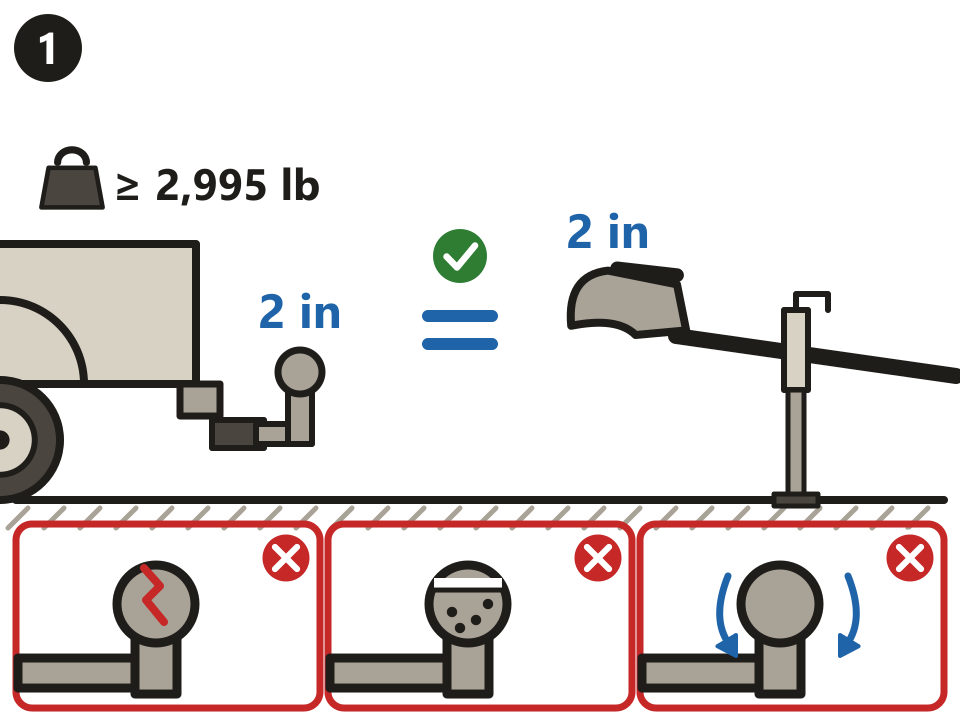
1. Match the ball REVIEW_REQUIRED
2-inch ball, rated 2,995 lb or more. No cracks, wear or looseness.
Task: Confirm the hitch ball's size and rating; inspect ball, hitch and coupler.
Shown: Side view, hitch and coupler not yet joined. The ball's size marking is shown as text. No lever movement is drawn.
Warnings: A mismatched, worn or loose ball can uncouple the trailer (p. 6, pp. 36-37).
Source: Big Tex Trailers Owners Manual, p. 6, 1.2.4; pp. 36-37; 35SA Single Axle Utility Trailer (product page), Features & Options, Coupler
Artwork drawn from the storyboard approved on 2026-10-17; awaiting the named reviewer (the operator).
- Size and rating wording matches p. 36.
- The coupler is drawn as an A-frame ball coupler.
- Nothing implies a latch direction.
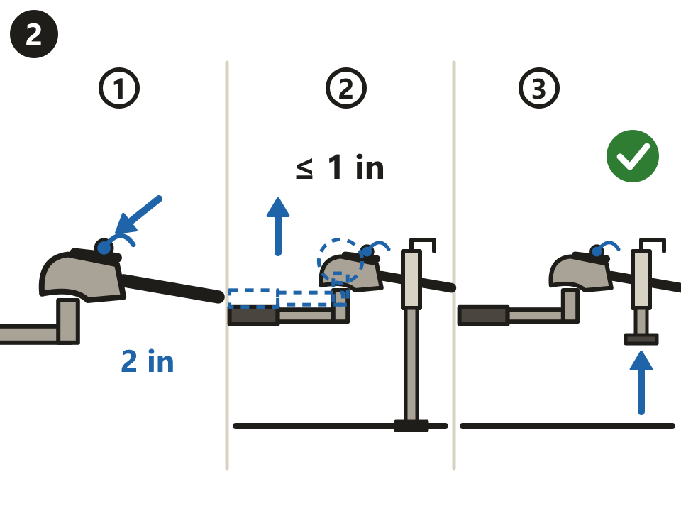
2. Seat, latch, pin, test REVIEW_REQUIRED
Seat it, latch it, pin it. Lift-test 1 inch, then raise the jack fully.
Task: Lower the coupler onto the ball, latch and pin it, lift-test 1 inch, then fully raise the jack.
Shown: Side view. Big Tex's Figure 3-1 (p. 37) shows a generic ball-coupler mechanism latched and unlatched and refers to the coupler maker's instructions (not in hand) for details. The panel shows the seated, latched and pinned state as in that figure, with no lever travel. Jack drawn as the standard top-wind set-back jack.
Warnings: Do not raise the tow vehicle more than 1 inch with the jack (p. 38). If the coupler will not secure, do not tow (p. 38).
Interlocks: Do not move until the coupler is locked, the chains are on and the jack is fully raised (p. 7).
Source: Big Tex Trailers Owners Manual, pp. 37-38
Artwork drawn from the storyboard approved on 2026-10-17; awaiting the named reviewer (the operator).
- The 1-inch test matches p. 38.
- The pin goes through the latch hole.
- The final frame shows the jack fully raised.
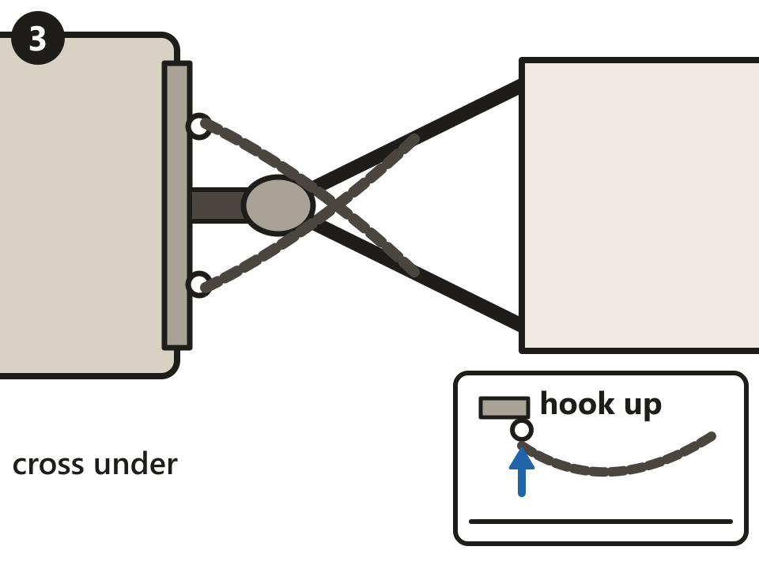
3. Cross the chains REVIEW_REQUIRED
Cross them under the coupler. Hook to the frame, S-hooks up from below. Slack, not dragging.
Task: Rig the safety chains.
Shown: Rear-above view of the hitch area. Chains hook to chain loops on the tow vehicle, never to the ball or an interchangeable hitch part.
Warnings: Do not attach chains to an interchangeable part of the hitch (p. 39).
Source: Big Tex Trailers Owners Manual, p. 7, 1.2.5; p. 39
Artwork drawn from the storyboard approved on 2026-10-17; awaiting the named reviewer (the operator).
- The X crosses under the coupler.
- The hooks enter from underneath.
- The slack is drawn clear of the road.
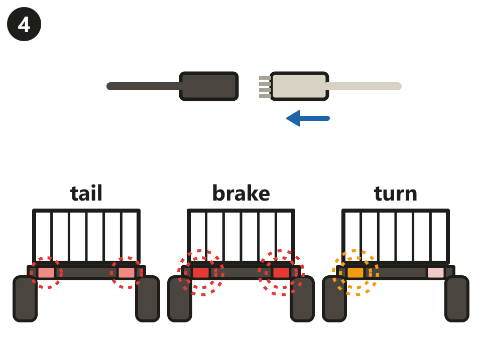
4. Plug in, check lights REVIEW_REQUIRED
Plug in the 4-way. Check tail, brake and turn lights.
Task: Connect the 4-way flat plug; check the tail, brake and turn lights.
Shown: Rear view of the trailer; the plug drawn as a 4-way flat connector. Tow-vehicle controls are named in the caption, not drawn.
Warnings: An improper connection leaves the lights dead; check before each tow (pp. 12, 41).
Source: Big Tex Trailers Owners Manual, p. 12, 1.2.13; pp. 40-41; 35SA Single Axle Utility Trailer (product page), Features & Options, Trailer Plug
Artwork drawn from the storyboard approved on 2026-10-17; awaiting the named reviewer (the operator).
- The connector is a 4-way flat.
- The light positions match an LED utility-trailer layout, without inventing extra lamps.
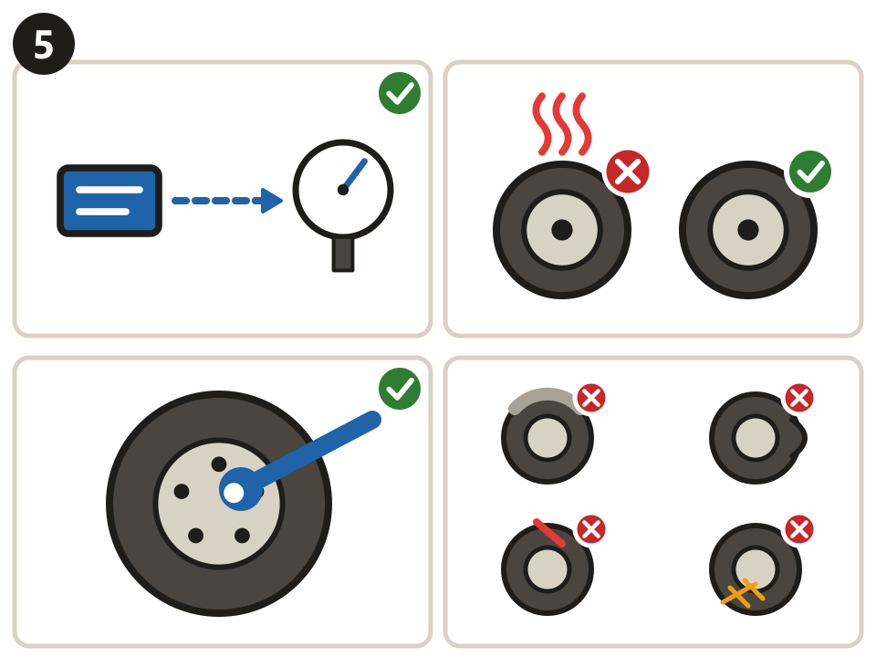
5. Tires and wheels REVIEW_REQUIRED
Pressure from the VIN label, tires cold. Lug nuts tight.
Task: Inspect the tires, set cold pressure from the VIN label and check that the lug nuts are tight.
Shown: Side view of the wheel. No pressure or torque number appears: Big Tex publishes neither a pressure (it points to the label) nor a torque (placeholder on p. 70).
Warnings: Replace a tire that has bald spots, bulges, cuts or cracks or shows cords (p. 8).
Source: Big Tex Trailers Owners Manual, pp. 8-9, 1.2.8
Artwork drawn from the storyboard approved on 2026-10-17; awaiting the named reviewer (the operator).
- The label is drawn at the front left.
- No numbers appear on the panel.
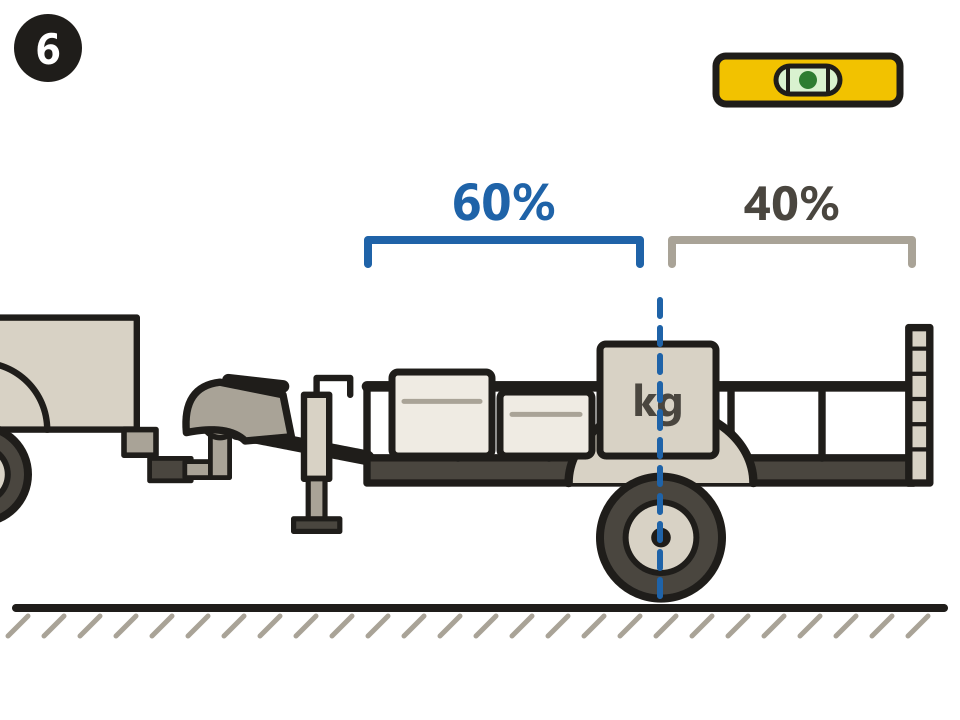
6. Load it right REVIEW_REQUIRED
Hitch up first, on level ground. About 60% of the load in the front half, heavy items low over the axle.
Task: Hitch up first, load on level ground with about 60% of the load in the front half, heavy items low over the axle.
Shown: Side view on level ground; a dashed line marks the axle and a 60 / 40 split marks the front and rear halves of the bed.
Warnings: No more than 2,995 lb for trailer and load together (p. 10; product page). Loading on uneven ground can overturn the trailer (p. 55).
Interlocks: Couple the trailer to the tow vehicle before loading (p. 54).
Source: Big Tex Trailers Owners Manual, p. 10; p. 51; p. 54, 4.3.1; p. 55, 4.3.1.1-4.3.1.2; 35SA Single Axle Utility Trailer (product page), Models & Dimensions, 35SA-12
Artwork drawn from the storyboard approved on 2026-10-17; awaiting the named reviewer (the operator).
- The 60% wording matches p. 55.
- The trailer is drawn hitched while loading.
- The weight figure matches the GVWR.
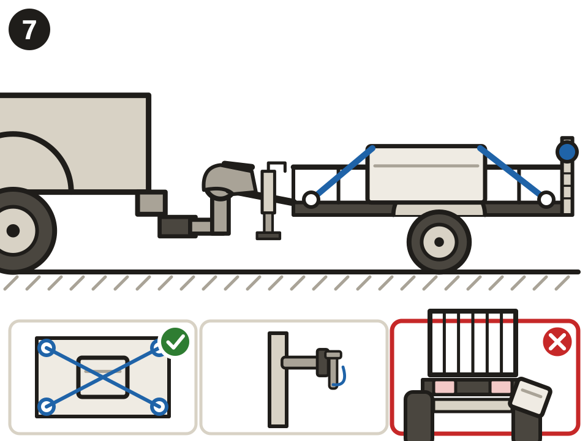
7. Strap and latch REVIEW_REQUIRED
Strap to the tie-down loops. Gate up and latched, pinned if there's a hole.
Task: Tie the load down, raise and latch the ramp gate, and pin the latch.
Shown: Rear three-quarter view. Four tie-down loops inside the bed (product page); the gate's latch hardware is drawn generically, because its exact form is not in the sources.
Warnings: An unlatched gate can drop cargo onto the road (p. 11).
Source: Big Tex Trailers Owners Manual, p. 11, 1.2.11; p. 55; 35SA Single Axle Utility Trailer (product page), Features & Options, Tie-Downs; Ramps
Artwork drawn from the storyboard approved on 2026-10-17; awaiting the named reviewer (the operator).
- Straps go to the loops, not to the rails.
- The latch is shown generically.
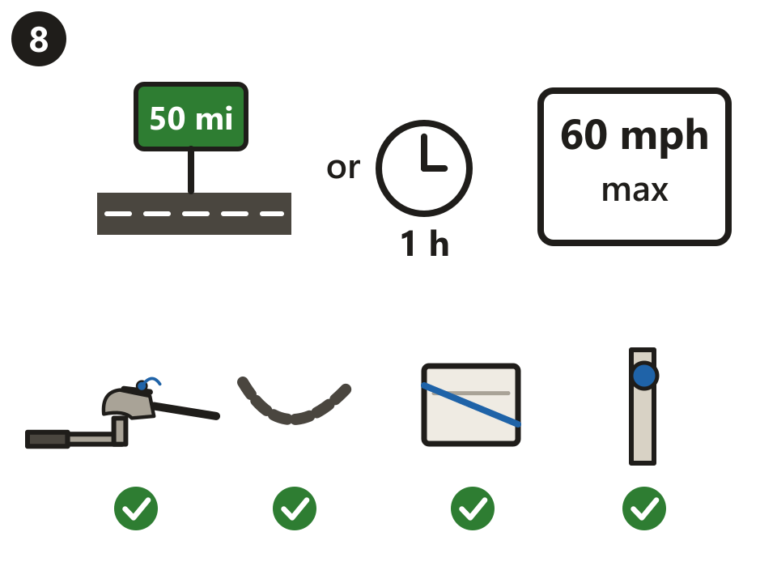
8. Check every 50 miles REVIEW_REQUIRED
Every 50 miles or hour: coupler, chains, load, latch. 60 mph maximum.
Task: Stop each 50 miles or hour of towing to check the coupler, chains, load and latches.
Shown: Icon row only; no vehicle controls.
Warnings: 60 mph is the maximum recommended speed, in ideal conditions only (p. 5).
Source: Big Tex Trailers Owners Manual, p. 58, "Make Regular Stops"; p. 5, 1.2.2
Artwork drawn from the storyboard approved on 2026-10-17; awaiting the named reviewer (the operator).
- The interval matches p. 58.
- The speed matches p. 5.
Public page text
| Headline READY | 12 ft single-axle utility trailer with a 4 ft ramp gate. It tows on a 2-inch ball rated for 2,995 lb or more and has no brakes. Facts from the OEM product page. |
|---|---|
| Quick start REVIEW_REQUIRED | 1. Check the ball: 2 inch, rated 2,995 lb or more, no cracks or wear. 2. Lower the coupler onto the ball, latch it and put the pin in. 3. Lift-test: raise the truck 1 inch with the trailer jack (no more), then wind the jack fully up. 4. Cross the safety chains under the coupler and hook them to the truck's frame or chain loops. 5. Plug in the 4-way and check the tail, brake and turn lights. 6. Tires: no damage, pressure as printed on the VIN label (front left), lug nuts tight. 7. Load with the trailer hitched, on level ground: about 60% of the load in the front half, heavy items low over the axle. Strap it down and latch the gate. 8. Every 50 miles or hour of towing, stop and check the hitch, chains, load and gate. The Start-Up Guide shows each step. Condensed from sourced steps; awaiting the reviewer. |
| Safety REVIEW_REQUIRED | Don't move the trailer until the coupler is latched and pinned, the chains are on and the jack is fully up. No more than 2,995 lb for trailer and load together (about 2,012 lb of cargo). 60 mph is the maximum recommended towing speed, in ideal conditions only. If the trailer sways, ease off the gas and steer as little as possible. Don't brake the truck to correct it. Never carry people, or flammable, explosive or poisonous loads. Condensed from sourced warnings; awaiting the reviewer. |
| Fuel / power READY | (empty) No fuel or power system; the lights run from the tow vehicle, covered in the quick start. |
| Troubleshooting REVIEW_REQUIRED | Lights not working: check the 4-way plug is fully connected. Coupler won't latch: check the ball is 2 inches. Don't tow until it locks. Anything cracked, loose or damaged: don't tow. Use Request Support. Condensed from sourced steps; awaiting the reviewer. |
| Return REVIEW_REQUIRED | Return the straps, chain pins and spare tire that came with the trailer. To unhitch: block the tires, unplug, unhook the chains, open the coupler, then wind the jack down on firm ground. Use Return checklist when you drop it off. Unhitching steps awaiting the reviewer; the accessory line is Northridge policy. |
| Emergency READY | For emergencies call your local emergency number. For equipment issues, use the support contact on this page. Mulemark's standard emergency wording (lib/onboarding/templates.ts). |
Documents on the page
- REVIEW_REQUIRED Big Tex Trailers 35SA-12 Start-Up Guide · startup_guide · hosted
- READY Big Tex Owners Manual · manual · link
Showcase story: Accessories and returns
Each rental goes out with straps, chain pins and a spare on the outbound checklist. When a renter returns it without the straps, the return checklist flags them missing, staff follow up and the item is resolved. Repeat renters and same-day turnarounds show how fast the loop runs.
What it does not show: It flags missing accessories, but it does not compare issued and returned items line by line.
Checklist
Return and outbound template utility_trailer. Accessories: Ratchet straps, Safety-chain pins, Spare tire.
Full review copy: docs/phase-e/packs/bigtex.35sa.12/review.md; storyboard: storyboard.md.
TRAILER-2041: Big Tex Trailers 14LP-14
Blockers
- Exact-model photo: no licensed 14LP photo exists; waiting on Big Tex's reply to the operator's permission request (sent 2026-10-17).
- Knowledgeable review of the finished guide and page text by the named reviewer (the operator).
- Hoist Manual applicability to the 14LP: not listed on its cover; asked of Big Tex.
- Lug-nut torque: Big Tex's manual leaves the value blank (p. 80); asked of Big Tex.
- Hoist capacity: not published by Big Tex.
Photo
BLOCKED No licensed exact-model photo exists. Waiting on Big Tex's permission; no stand-in is used.
Configuration
| bed length ft | 14 |
|---|---|
| bed width in | 83 |
| pull type | bumper pull, 2-5/16 in adjustable ball coupler |
| brakes | electric, both axles (forward self-adjusting) |
| breakaway | fitted (complete breakaway system with zip cable) |
| trailer plug | 7-way RV |
| jack | 12,000 lb drop-leg jack (side wind) |
| hoist | self-contained scissor ram; power-up / power-down and gravity-down pump |
| battery | 12 V deep cycle, 5 A 110 V onboard charger |
| solar charger | 5 W (showcase configuration; the OEM page does not mark it standard or optional) |
| remote | wireless remote (showcase configuration; same caveat) |
| rear gate | combo gate: barn doors and spreader gate |
| ramps | not fitted |
| drop axles | not fitted |
Manual and supplements
- Big Tex Trailers Owners Manual (Dump Trailers) (Rev. March 2020. Draft state: the lug-nut torque table is a placeholder (p. 80)) · in-hand · link-only
- Hoist Manual (February 2013. Cover: 14LX/GX, 10LP-12 and 70LP dump trailers; BT-8, BT-10, BT-12, BT-18 and BT-20 hoists) · in-hand · link-only
- Standard Big Tex Electrical Connector Wiring Diagrams (Plug Contacts) (Undated. 4-way, 6-way, 7-way RV and 7-way semi wiring, including the breakaway switch, battery and charger) · in-hand · link-only
- Standard Big Tex Electrical Connector Wiring Diagrams (Wiring Diagram) (© 2006, sheet 63. 4-way, 6-way and 7-way contact layouts, viewed into the open end of plug or socket) · in-hand · link-only
Start-Up Guide
REVIEW_REQUIRED Big Tex Trailers 14LP-14 Start-Up Guide (PDF, 2 pages, 408 KB). Carries the review-draft banner until every panel is approved.
Panels (8)
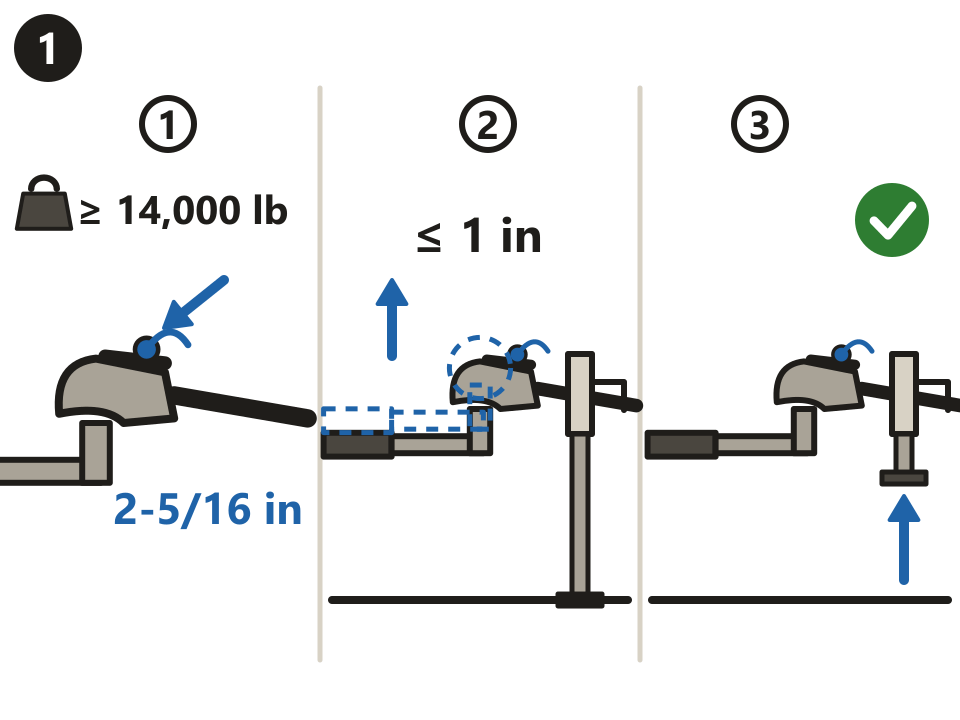
1. Couple and lock REVIEW_REQUIRED
2-5/16 in ball rated 14,000 lb. Seat, latch, pin. Lift-test 1 inch, then raise the jack.
Task: Check the ball, seat the coupler, latch and pin it, lift-test 1 inch, raise the jack.
Shown: Side view. Big Tex's Figure 3-1 (p. 43) shows a generic ball-coupler mechanism latched and unlatched; the fitted Demco EZ Latch's own instructions are not in hand. The panel shows the seated, latched and pinned state, with no lever travel. Jack drawn as a side-wind drop-leg jack.
Warnings: Do not raise the tow vehicle more than 1 inch with the jack (p. 44). If the coupler will not secure, do not tow (p. 44).
Interlocks: Do not move until the coupler is locked, chains and breakaway cable are attached and the jack is fully raised (p. 7).
Source: Big Tex Trailers Owners Manual (Dump Trailers), pp. 41-44; 14LP Heavy Duty Ultra Low Profile Dump (product page), Features & Options, Coupler; Jack
Artwork drawn from the storyboard approved on 2026-10-17; awaiting the named reviewer (the operator).
- Ball size and rating match the coupler and GVWR.
- No latch direction is implied.
- The jack is drawn as a drop-leg side-wind type.
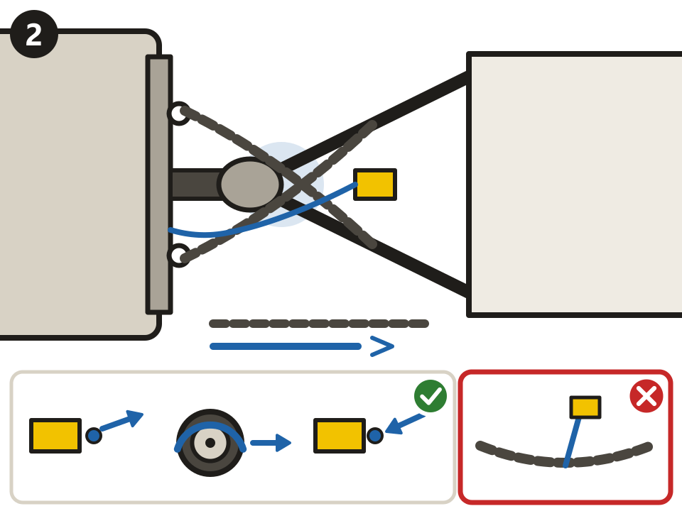
2. Chains and breakaway REVIEW_REQUIRED
Chains crossed under the coupler. Breakaway cable to the truck, not the chains. Pull-test, pin straight back in.
Task: Cross the chains; clip the breakaway cable to the tow vehicle and test it.
Shown: Rear-above view. The breakaway switch is drawn generically at the tongue; its exact housing is not in the sources.
Warnings: Never attach the breakaway cable to a safety chain or the hitch (pp. 45-46). The breakaway battery runs down fast with the pin out (p. 46).
Interlocks: If the breakaway test fails, do not tow (p. 46).
Source: Big Tex Trailers Owners Manual (Dump Trailers), p. 7, 1.2.5; p. 8, 1.2.6; pp. 44-46
Artwork drawn from the storyboard approved on 2026-10-17; awaiting the named reviewer (the operator).
- The cable is shorter than the chains' slack (it pulls first).
- The pin goes back in the final frame.
3. Lights and brakes REVIEW_REQUIRED
Plug in the 7-way. Check tail, brake and turn lights. Under 5 mph, apply the brake controller and feel the brakes.
Task: Connect the 7-way plug; check the lights; test the electric brakes at walking speed.
Shown: Rear view; the plug drawn as a 7-way RV connector. The in-cab brake controller is named in the caption, not drawn, because it is the tow vehicle's own equipment.
Warnings: An improper connection leaves the lights and electric brakes inoperable (pp. 12, 47).
Source: Big Tex Trailers Owners Manual (Dump Trailers), p. 12, 1.2.13; pp. 46-47; 14LP Heavy Duty Ultra Low Profile Dump (product page), Features & Options, Trailer Plug
Artwork drawn from the storyboard approved on 2026-10-17; awaiting the named reviewer (the operator).
- The connector is a 7-way RV.
- The speed is under 5 mph.
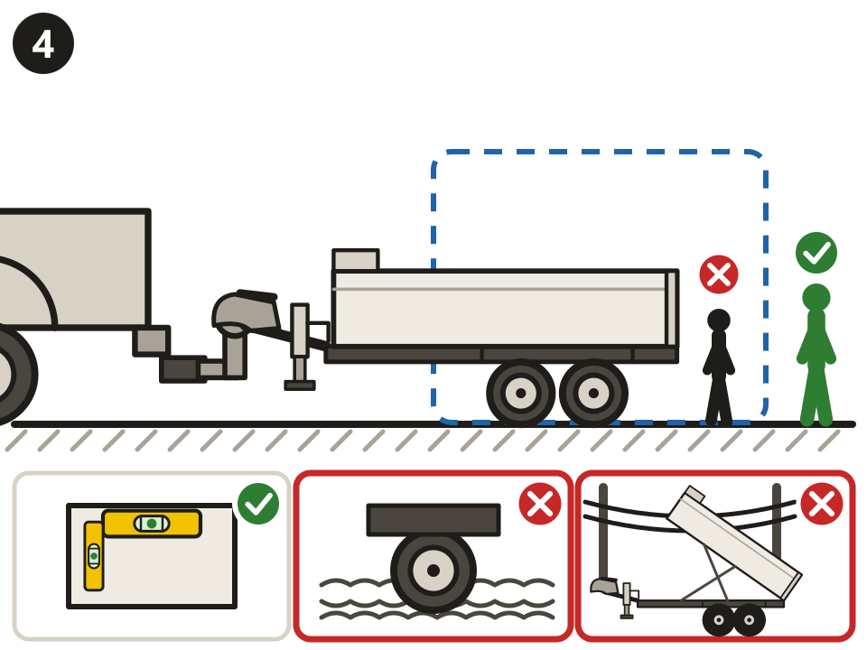
4. Before you dump REVIEW_REQUIRED
Level, firm ground. Everyone clear. Look up: no power lines.
Task: Level, firm ground; people clear; no power lines overhead.
Shown: Side view, body down. No controls drawn.
Warnings: A raised body near power lines can electrocute without contact (p. 67). Uneven ground can overturn the trailer (p. 64).
Source: Big Tex Trailers Owners Manual (Dump Trailers), p. 63, danger box; p. 64, 4.4.6; p. 67
Artwork drawn from the storyboard approved on 2026-10-17; awaiting the named reviewer (the operator).
- Level both side to side and front to back.
- The power-line symbol follows ISO 7010 conventions without copying a sign.
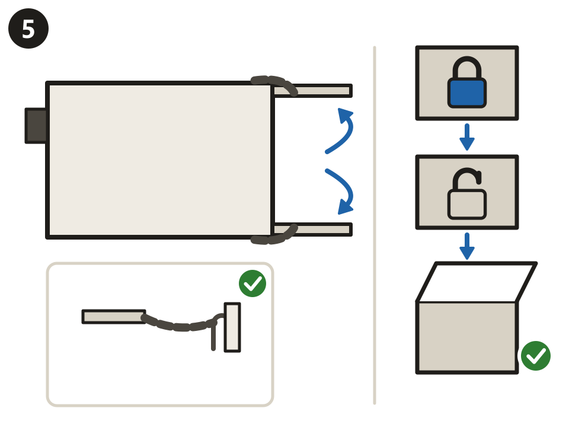
5. Doors open and chained REVIEW_REQUIRED
Swing the rear doors open and chain them to the sides. Open the control box.
Task: Open the rear doors and chain them to the sides; open the control box.
Shown: Rear view of the combo gate used as barn doors. The control box is drawn closed, then open, with no switch layout inside (not in the sources).
Warnings: Lock the control box when the trailer is not in use (p. 64).
Source: Big Tex Trailers Owners Manual (Dump Trailers), p. 64, 4.4.6; 14LP Heavy Duty Ultra Low Profile Dump (product page), Features & Options, Gate; Storage
Artwork drawn from the storyboard approved on 2026-10-17; awaiting the named reviewer (the operator).
- Doors are chained, not just swung open.
- Confirm where the 14LP houses its control switch (the product page lists a lockable pump and battery box at the front of the bed) before drawing the box in place.
6. Raise in stages REVIEW_REQUIRED
Stand clear. UP to about half, check behind. Then about three-quarters, check again. Stay at the controls.
Task: Raise to about half, check behind, then about three-quarters, check again.
Shown: Side view. The control is shown as a generic device with UP and DOWN labels, the words the manual uses; the fitted wireless remote's real layout is not in the sources and is not drawn.
Warnings: Never leave the controls while the body is raised (pp. 63-64). Do not fully raise a loaded body (p. 67).
Source: Big Tex Trailers Owners Manual (Dump Trailers), pp. 63-64; p. 67
Artwork drawn from the storyboard approved on 2026-10-17; awaiting the named reviewer (the operator).
- Angles read as about half and about three-quarters, not exact degrees.
- The operator stands well clear of the body.
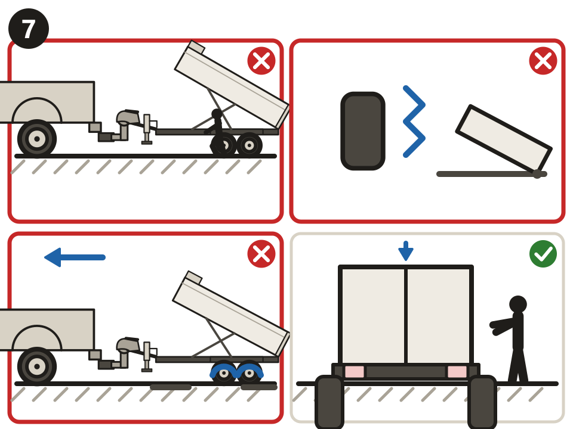
7. Stuck load: lower first REVIEW_REQUIRED
Load stuck? Don't jerk it or brake hard. Lower the body, then free it by hand. Never go under a raised body.
Task: Never shock a stuck load out; lower the body and free it by hand. Never go under a raised body.
Shown: Side views; no controls drawn.
Warnings: Risk of death by crushing (pp. 64-65). The body prop holds an empty body only (p. 65).
Source: Big Tex Trailers Owners Manual (Dump Trailers), p. 63, danger box; pp. 64-65; p. 67
Artwork drawn from the storyboard approved on 2026-10-17; awaiting the named reviewer (the operator).
- The prohibition frame is unmistakable (ISO 3864 / ANSI Z535 conventions).
- Nobody is drawn under a raised body except in the crossed-out frame.
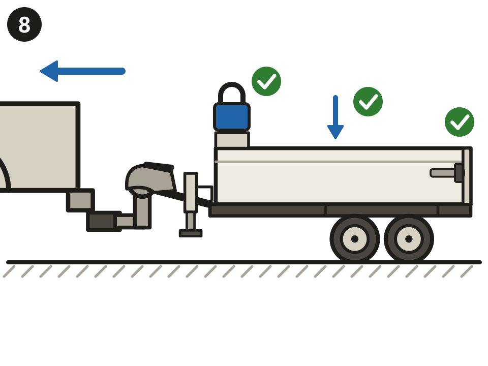
8. Down, latched, locked REVIEW_REQUIRED
Body fully down. Doors latched. Controls locked. Then drive.
Task: Lower fully, latch the doors, lock the controls before moving.
Shown: Side view; the control box drawn closed with a lock symbol.
Warnings: Have the body down before moving the trailer (p. 63).
Interlocks: Secure the rear doors before moving forward (p. 64).
Source: Big Tex Trailers Owners Manual (Dump Trailers), p. 63, danger box; p. 64, 4.4.6; p. 67
Artwork drawn from the storyboard approved on 2026-10-17; awaiting the named reviewer (the operator).
- All three conditions shown.
- Order matches the manual (body down before moving).
Public page text
| Headline READY | 14 ft tandem-axle dump trailer with electric brakes, breakaway and a battery-powered hoist. It tows on a 2-5/16 inch ball rated for 14,000 lb or more, with a brake controller in the truck. Facts from the OEM product page and the dump-trailer manual. |
|---|---|
| Quick start REVIEW_REQUIRED | 1. Ball: 2-5/16 inch, rated 14,000 lb or more. Seat the coupler, latch it and pin it. 2. Lift-test: raise the truck 1 inch with the jack (no more), then raise the jack fully. 3. Cross the safety chains under the coupler and hook them to the truck's frame. 4. Clip the breakaway cable to the truck, not to a chain. Test: pull the pin, feel the brakes hold, put the pin straight back. 5. Plug in the 7-way and check the lights. Then, under 5 mph, apply the brake controller and feel the trailer brakes. 6. Tires: no damage, pressure as printed on the VIN label (front left), lug nuts tight. 7. Load hitched and level, within the payload decal (9,820 lb listed). Spread loose material evenly. 8. To dump: level, firm ground, people clear, no power lines overhead. Chain the doors open, raise in stages and check behind. The Start-Up Guide shows each step. Condensed from sourced steps; awaiting the reviewer. |
| Safety REVIEW_REQUIRED | Never go under a raised dump body. The body prop is for maintenance, with the body empty. Stay at the controls while the body is up. Lower it fully, latch the doors and lock the controls before you move. Don't fully raise a loaded body: the truck's rear wheels can lose traction. If the hoist won't lift the load, unload some by hand. Never push it with a jack or machine. A raised body near power lines can electrocute without touching them. Don't move until the coupler is locked, the chains and breakaway cable are on and the jack is up. 60 mph is the maximum recommended speed, in ideal conditions only. No people or hazardous loads. Condensed from sourced warnings; awaiting the reviewer. |
| Fuel / power REVIEW_REQUIRED | The hoist runs on the trailer's 12 V deep-cycle battery, which has an onboard 110 V charger and a 5 W solar charger. The breakaway battery runs down fast while its pin is out, so put the pin straight back after testing. Battery facts from the product page; the pin line from the manual; awaiting the reviewer. |
| Troubleshooting REVIEW_REQUIRED | Hoist won't lift the load: unload some by hand, then use Request Support. Never push it with a jack or machine. Load stuck: lower the body and free it by hand. Don't jerk the button or brake hard. Lights or brakes dead: check the 7-way plug is fully connected. Breakaway test fails: don't tow. Use Request Support. Condensed from sourced notes; the hoist manual's battery check stays off the page until Big Tex confirms it applies. |
| Return REVIEW_REQUIRED | Return the straps, chain pins, spare tire and the hoist remote. Body fully down, doors latched, controls locked. To unhitch: block the tires, unplug, unclip the breakaway cable, unhook the chains, open the coupler, then lower the jack on firm ground. Use Return checklist when you drop it off. Unhitching steps awaiting the reviewer; the accessory line is Northridge policy. |
| Emergency READY | For emergencies call your local emergency number. For equipment issues, use the support contact on this page. Mulemark's standard emergency wording (lib/onboarding/templates.ts). |
Documents on the page
- REVIEW_REQUIRED Big Tex Trailers 14LP-14 Start-Up Guide · startup_guide · hosted
- READY Big Tex Owners Manual (Dump Trailers) · manual · link
Showcase story: Operational support on simpler equipment
Renters ask for help through the tag: "the box won't go up", "the lights are out". Staff answer from Big Tex's dump-trailer manual and the trailer's own checks, and most requests close quickly; one is still open when the demo starts.
What it does not show: Support runs through Northridge staff; there is no ticketing or response-time promise.
Checklist
Return and outbound template utility_trailer. Accessories: Ratchet straps, Safety-chain pins, Spare tire, Wireless hoist remote, Tarp.
Full review copy: docs/phase-e/packs/bigtex.14lp.14/review.md; storyboard: storyboard.md.